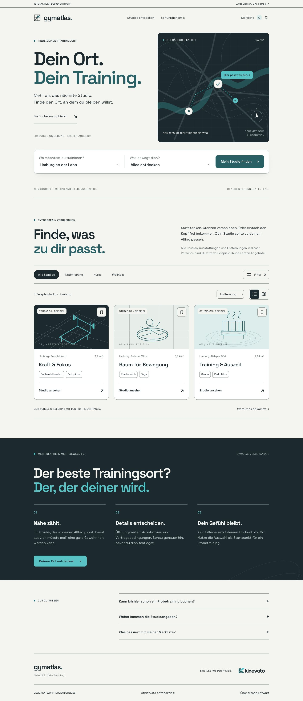
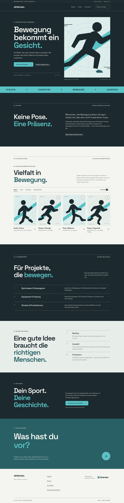

ZWEI MARKEN. EINE FAMILIE.
Neue Perspektiven.
Die gleiche Bewegung.
Ein Ort für dein Training. Ein Gesicht für deine Geschichte. Zwei eigenständige Webentwürfe im Kinevato-Erscheinungsbild.

01 / STUDIOS ENTDECKEN
Gymatlas.
Klar, offen und orientierend. Mit einer eigenen Kartenwelt, kombinierbaren Filtern und einer Merkliste zum Ausprobieren.
Gymatlas-Entwurf öffnen ↗
02 / SPORTLICHE TALENTE
Athletvato.
Sportlich, konzentriert und redaktionell. Mit illustrierten Konzeptprofilen, Shortlist und einem interaktiven Projektbriefing.
Athletvato-Entwurf öffnen ↗Zum Ansehen. Zum Ausprobieren.
Beide Seiten sind interaktive Designentwürfe. Profile, Studios und Karten sind illustrative Beispiele. Es werden keine Anfragen verschickt und keine Buchungen vorgenommen.
Gemeinsame Handschrift.
Space Grotesk, Ink und Paper, präzises Türkis. Originale aus der Kinevato-CI-Zentrale. Der Name Athletvato folgt der bereits registrierten Domain athletvato.de.